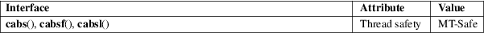

cabs, cabsf, cabsl − absolute value of a complex number
Math library (libm, −lm)
#include <complex.h>
double
cabs(double complex z);
float cabsf(float complex z);
long double cabsl(long double complex
z);
These functions return the absolute value of the complex number z. The result is a real number.
For an explanation of the terms used in this section, see attributes(7).

C11, POSIX.1-2008.
glibc 2.1. C99, POSIX.1-2001.
The function is actually an alias for hypot(a, b) (or, equivalently, sqrt(a*a + b*b)).
abs(3), cimag(3), hypot(3), complex(7)